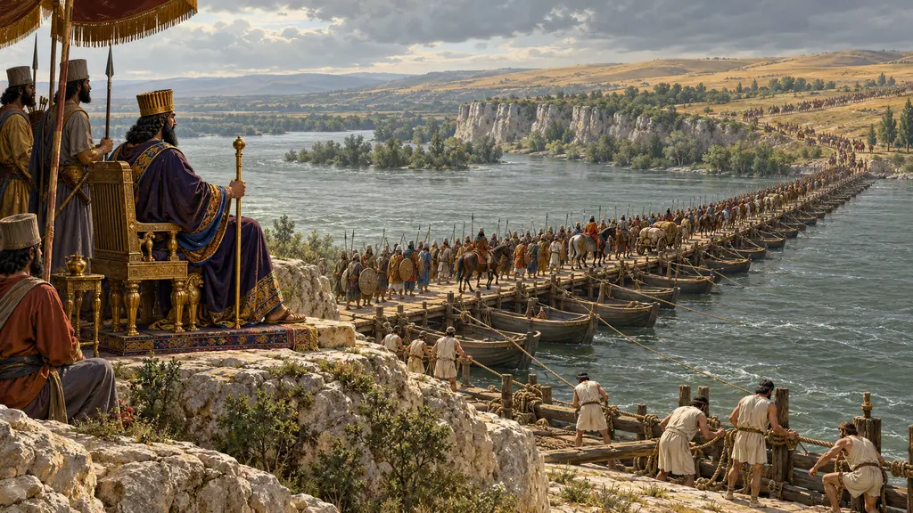
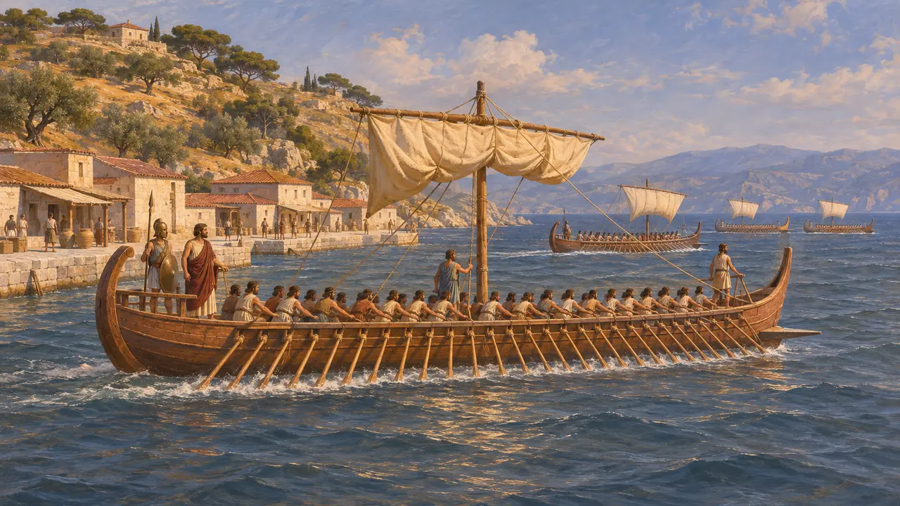
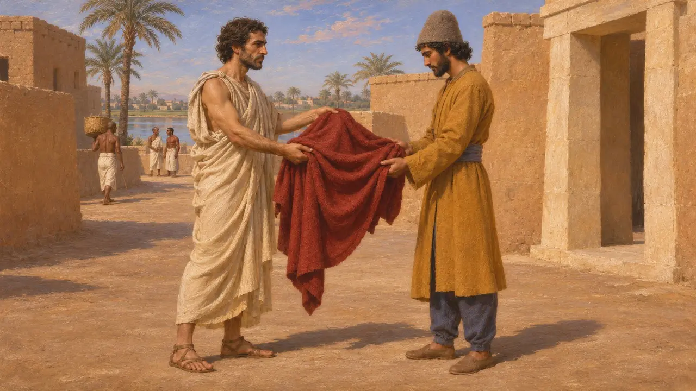
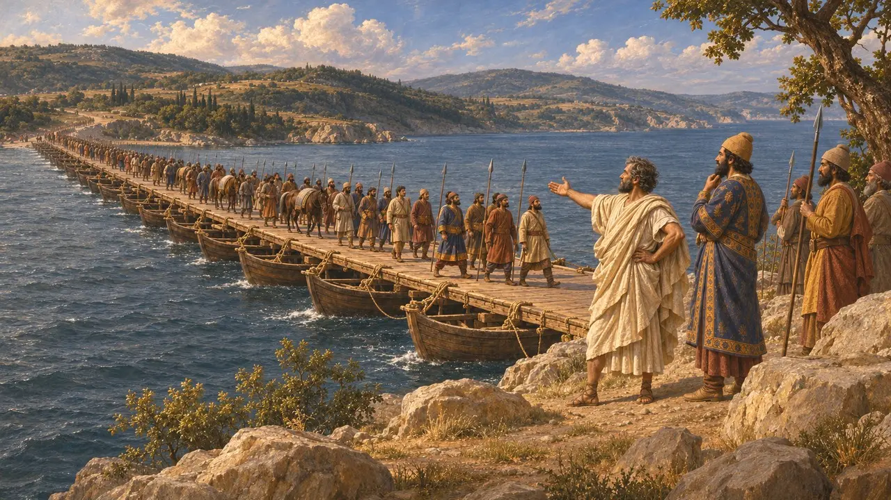
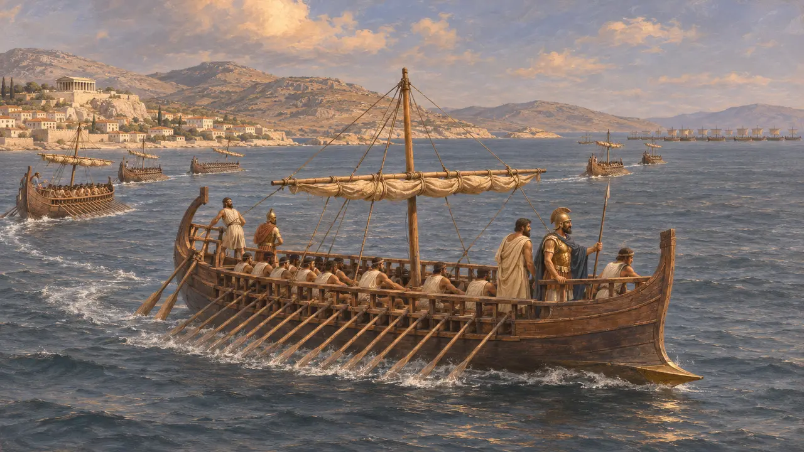
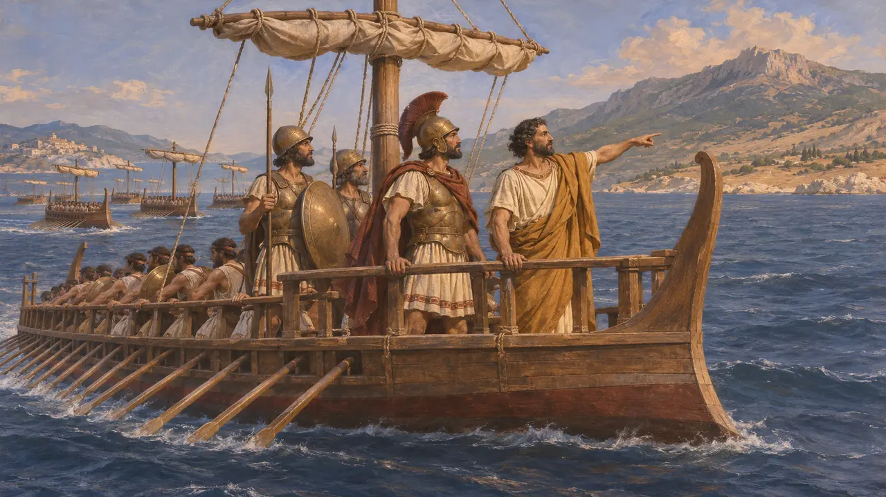

萨摩斯是一座靠近亚洲大陆的富庶希腊岛屿,地处波斯势力与爱琴海之间。其僭主波吕克拉特斯建立了一支强大的舰队,后被波斯总督奥罗厄忒斯杀害。后来,萨摩斯为博斯普鲁斯海峡的浮桥提供了工程师,在拉德提供了战船,并发出了将希腊舰队引向米卡勒的求援。
游戏中： 萨摩斯见于编年史条目,也见于博斯普鲁斯海峡、拉德与米卡勒的条目。游戏没有为它设置专属的关卡、建筑或机制。

波利克拉特斯及其海上势力
古代记述希罗多德说,波律克拉底与他的兄弟们一同夺取了萨摩斯,随后独自统治,并与埃及的阿马西斯结盟,但这一同盟后来破裂。他说波律克拉底建造了一支庞大的舰队,其中包括五十桨战船,并攻取了诸多岛屿和大陆城镇。希罗多德称他为继米诺斯之后第一位谋求海上霸权的希腊人。
Herodotus 3.39-47; 3.122
波利克拉特斯之死
古代记述希罗多德说,波斯驻萨第斯的总督奥罗埃特斯以钱财相许,把波吕克拉特斯诱骗到大陆,随后将其杀害。他称奥罗埃特斯的动机是与波斯人米特罗巴特斯的争执以及自己的野心,但也记载了另一种说法。这一故事仅见于希罗多德,年代大约在公元前522年。
Herodotus 3.120-125

西罗松与波斯的征服
古代记述希罗多德说,大流士当时是冈比西斯在埃及的一名近卫,他从流亡者西罗松那里得到了一件斗篷。大流士成为国王后报答了这份恩情,派欧塔涅斯率军夺取萨摩斯,并把它交给西罗松。希罗多德说,这座岛上几乎空无一人,后来才重新有人定居。
Herodotus 3.139-149

曼德罗克勒斯与博斯普鲁斯海峡浮桥
古代记述希罗多德说,萨摩斯工程师曼德罗克勒斯为大流士的斯基泰远征设计了横跨博斯普鲁斯海峡的桥。他说曼德罗克勒斯得到了丰厚的赏赐,并在萨摩斯的赫拉神庙中供奉了一幅描绘渡海场面的画。希罗多德还记下了他所说的随画题写的诗句。
Herodotus 4.87-88

拉德之战与萨摩斯人的出逃
争夺中希罗多德说,公元前494年的拉德海战中,大多数萨摩斯舰长在战斗开始时便驶离战场,此前他们与流亡的僭主埃阿凯斯达成了协议,只有少数人留了下来。他说,萨摩斯人后来表彰了那些留下的人。现代史家对这幅贬抑爱奥尼亚舰长的画面在多大程度上可信提出了质疑。
Herodotus 6.8-14

萨摩斯与米卡勒
古代记述希罗多德说,萨摩斯使者于公元前479年来到提洛岛的希腊舰队,敦促其向东航行。他说舰队随后渡海前往萨摩斯,并在大陆上的米卡勒与波斯人交战,爱奥尼亚人在那里倒戈攻击波斯人。
Herodotus 8.132; 9.90-96
来源
- Herodotus 3.39-47
- Herodotus 3.120-125
- Herodotus 3.139-149
- Herodotus 4.87-88
- Herodotus 6.8-14
- P. Briant, From Cyrus to Alexander, 2002